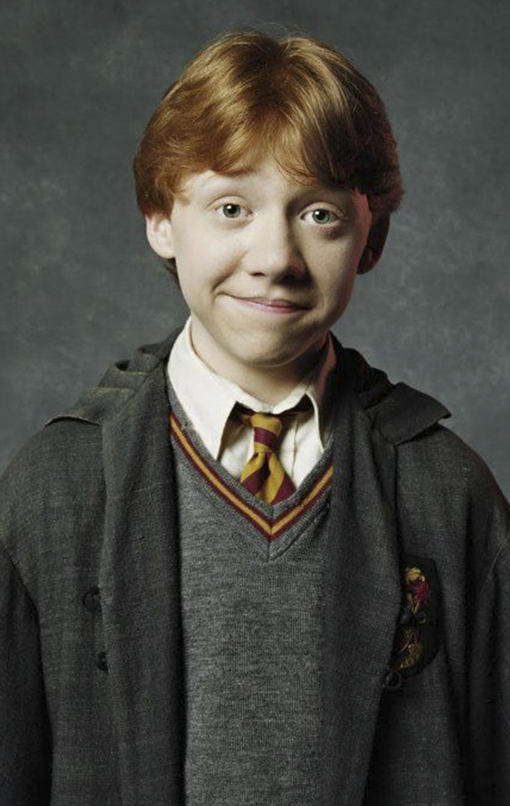

1. Harry Potter
Teniendo las novelas por título Harry Potter, es evidente que su protagonista está entre los personajes más importantes. Este joven huérfano tiene una mísera vida con sus malvados tíos. Pero todo eso cambiará cuando descubra por su undécimo cumpleaños que es un mago muy famoso cuyo destino está fuertemente ligado al de Lord Voldemort, un malévolo mago que asesinó a sus padres cuando Harry era un bebé y que, por alguna razón, el joven logró sobrevivir.
Su popularidad se fue incrementando durante su estancia en Hogwarts tras proteger la Piedra Filosofal de Voldemort, salvar a Ginny Weasley en la Cámara Secreta, ganar el Torneo de los Tres Magos, fundar el Ejército de Dumbledore y participar en la Batalla del Departamento de Misterios y en la Segunda Guerra Mágica, donde consiguió derrotar al malvado Voldemort.

2. Ron Weasley
Terminado el verano, Harry (Radcliffe) no ve la hora de abandonar la casa de sus odiosos tíos, pero, inesperadamente se presenta en su dormitorio Dobby, un elfo doméstico, que le anuncia que correrá un gran peligro si vuelve a Hogwarts. A pesar de los esfuerzos del elfo por retenerlo, Harry es rescatado por Ron y sus hermanos, con la ayuda de un coche volador, y recibido con los brazos abiertos en el cálido hogar de los Weasley.
De la misma edad que Harry, Ron Weasley coincidió con nuestro protagonista en el Expreso de Hogwarts y desde entonces se convirtieron en amigos inseparables, quienes vivieron multitud de aventuras junto a su compañera y también gran amiga Hermione Granger a lo largo de sus años en Hogwarts. Ron es el sexto hijo de la familia Weasley, cuyos hermanos mayores destacaron en la escuela de magia. Incluso sus revoltosos hermanos gemelos Fred y George quienes, a pesar de meterse en líos, consiguen sacar muy buenas notas.
A pesar de todo, el bueno de Ronald Weasley también tiene numerosas hazañas a destacar, entre ellas salvar a su hermana Ginny del basilisco en la Cámara Secreta, salvar a Sirius Black de los dementores de Azkaban o peleando en múltiples batallas durante la Segunda Guerra Mágica contra Lord Voldemort y su ejército.
3. Hermione Granger
La tercera del trío protagonista, Hermione Granger es la mejor amiga de Harry y Ron (aunque de este último acabó siendo mucho más que su amiga). Al principio Harry y Ron tenían a Hermione como una sabelotodo repipi, pero tras salvarla de un troll en Halloween, los tres acabaron forjando un fuerte vínculo de amistad.
Entre las hazañas de Hermione destaca el fundar la asociación P.E.D.D.O (Plataforma Élfica de Defensa de los Derechos Obreros) para ayudar a los elfos domésticos. También estuvo detrás de la creación del Ejército de Dumbledore y participó tanto en la Batalla del Departamento de Misterios como en la Batalla de Hogwarts durante la Segunda Guerra Mágica.